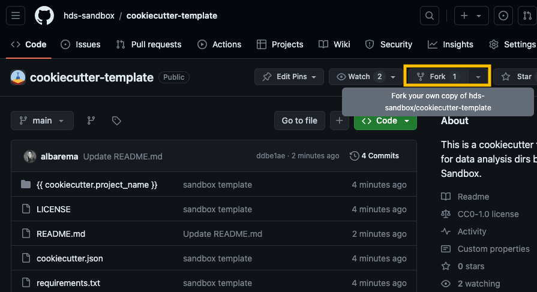

Let’s start with some practical exercises focused on implementing tools that will help you with the collect & document data life cycle phase.
Data structure with cookiecutter
Establishing a consistent file structure and naming conventions will help you efficiently manage your data. We will classify your data and data analyses into two distinct types of folders to ensure the data can be used and shared by many lab members while preventing modifications by any individual:
Data folders: store raw and processed datasets, the workflow/pipeline used, data provenance, and quality control reports. These folders should be locked and read-only to prevent changes, with MD5 checksums used to verify data integrity.
Project folders: contain all necessary files for a specific research project (scripts, results, intermediate files, etc.)
Setting up folder templates
Creating a folder template is straightforward with cookiecutter a command-line tool that generates projects from templates (called cookiecutters). You can do it from scratch (see Bonus) or opt for one of our pre-made templates available as a Github repository (recommended for this workshop).
Let’s give it a try!
Exercise 1: Get familiar with Cookiecutter
Use our cookiecuter-template and fill-up the variables
You’re ready to customize your own template! Explore the following folder structure and the types of files you might encounter. How does it compare to your own setup?
Project folder structure
<project>_<keyword>_YYYYMMDD├── data # symlinks or shortcuts to the actual data files │ └── <ID>_<keyword>_YYYYMMDD├── documents # docs and files relevant to the project │ └── research_project_template.docx├── metadata.yml # variables or key descriptors of the project or data├── notebooks # notebooks containing the data analysis│ └── 01_data_processing.rmd│ └── 02_data_analysis.rmd│ └── 03_data_visualization.rmd├── README.md # detailed description of the project├── reports # notebooks rendered as HTML/PDF for sharing │ └── 01_data_processing.html│ └── 02_data_analysis.html│ ├── 03_data_visualization.html│ │ └── figures│ │ └── tables├── requirements.txt // env.yaml # file listing necessary software, libs and deps├── results # output from analyses, figs and tables│ ├── figures│ │ └── 02_data_analysis/│ │ └── heatmap_sampleCor_20230102.png│ ├── tables│ │ └── 02_data_analysis/│ │ └── DEA_treat-control_LFC1_p01.tsv│ │ └── SumStats_sampleCor_20230102.tsv├── pipeline # pipeline scripts │ ├── rules // processes │ │ └── step1_data_processing.smk│ └── pipeline.md├── scratch # temporary files or workspace for dev └── scripts # other scripts
Exercise 2 for non-GitHub users
If you haven’t created a GitHub account or are not comfortable using it yet, you can skip step 1. In step 2, use the sandbox URL instead by running the following command:
While you’ll clone a sample template, you’re encouraged to modify it to fit your specific needs—you’re not limited to following our example exactly.
Go to our Cookicutter template and click on the Fork button at the top-right corner of the repository page to create a copy of the repository on your own GitHub account or organization.

fork_repo_example
Open a terminal on your computer, copy the URL of your fork and clone the repository to your local machine (the URL should look something like https://github.com/your_username/cookiecutter-template):
git clone <your URL to the template>
If you have a GitHub Desktop, click Add and select Clone repository from the options.
Access the cloned repository (cd cookiecutter-template) and navigate through the different directories.
The Cookiecutter template you just cloned is missing the ‘reports’ directory and the ‘requirements.txt’ file. Create these, along with a subdirectory named ‘reports/figures’.
Feel free to customize the template further to fit your project’s requirements. You can change files, add new ones, remove existing ones or adjust the folder structure. For inspiration, review the data structure under ‘Project folder structure’ above.
Utilize the template
Terminal
cookiecutter cookiecutter-template
The command cookiecutter cookiecutter-template will initiate an interactive prompt. Fill up the variables and verify that the new structure (and folders) looks like you would expect. Have any new folders been added, or have some been removed?
Example bash commands
# Assuming the name of the project is 'myproject_sep24'ls-l myproject_sep24
Optional (for those already familiar with git and GitHub)
The following steps enable version control and make it easy to share the structure with other members of your lab.
Commit and push changes when you are done with your modifications.
Stage the changes with git add.
Commit the changes with a meaningful commit message git commit -m "update cookicutter template".
Push the changes to your forked repository on Github git push origin main (or the appropriate branch name).
Use cookiecutter on the new template! cookiecutter <URL to your GitHub repository "cookicutter-template">
If you’ve completed the tasks quickly and have time left, feel free to tackle the optional final exercise.
Bonus exercise 2
Create a template from scratch using this tutorial scratch. Your template can be as basic as the example provided or include a data folder structure with directories for raw data, processed data, and the pipeline used for preprocessing.
Step 1: Create a directory for the template (like the one above).
Step 2: Write a cookiecutter.json file with variables such as project_name and author.
Hint
{"project_name":"MyProject","author_name":"Your Name","description":"A short description of your project"}
Step 3: Set up the folder structure by creating subdirectories and files as needed.
Step 4: Incorporate cookiecutter variables in the names of files (test_{{cookiecutter.project_name}}.py).
Step 5: Use cookiecutter variables within scripts opr metadata files (e.g., such as printing a message that includes the project name or the metadata file gets automatically populated with the cookiecutter variables),
Naming conventions
A well-structured naming system keeps files organized, easy to search, compatible across different systems, and useful for collaboration.
Exercise 3
Q1. Which naming conventions should be used and why?
Q2. Which file name is more readable?
Regular expressions are an incredibly powerful tool for string manipulation. We recommend checking out RegexOne to learn how to create smart file names that will help you parse them more efficiently.
Bonus exercise 3
Which of the regexps below match ONLY the filenames shown in bold?
We recommend using md5sum to verify data integrity, particularly when downloading large datasets, as it is a widely used tool. All data and files archived on Zenodo include an MD5 hash for this purpose. Let’s have a look at the content of a newly developed software fastmixture that estimates individual ancestry proportions from genotype data.
Zenodo offers an API at https://zenodo.org/api/, which functions similarly to the DOI API. This allows you to retrieve a BibTeX-formatted reference for a specific record (e.g., records/12683371) using either curl or wget.
Compute md5 hash and enter the value (no white-spaces)
Is your value tha same as the one shown on zenodo
Finally, compute the sha256 digest (with program sha256)
sha256sum
and enter the value
Bonus exercise 4
We will be using the HLA database for this exercise. Click on this link or google IMGT HLA> Download. Important: go through the README before downloading! Check if a checksums file is included.
Create a file with the hash info (one that only contains the checksums of the target files, in this case, only the one for hla_prot.fasta)
md5checksum.txt
7348fbef5ab204f3aca67e91f6c59ed2 hla_prot.fasta
Create a bash script to download the target files (named “dw_resources.sh” in your current directory).
#!/bin/bashmd5file="md5checksum.txt"# Define the URL of the files to downloadurl="ftp://ftp.ebi.ac.uk/pub/databases/ipd/imgt/hla/hla_prot.fasta"# (Optional 1) Save the original file name: filename=$(basename "$url")# (Optional 2) Define a different filename to save the downloaded file (`wget -O $out_filename`)# out_filename = "imgt_hla_prot.fasta"# Download the filewget$url&&\md5sum--status--check$md5file
We recommend using the argument --statusonly when you incorporate this sanity check as part of your pipeline so that it only prints the errors (it doesn’t print output when success).
Verify the file against the downloaded checksum
Generate the md5 hash & compare to the one from the original md5checksum.txt
Documentation
Explore the examples below and consider how effectively the README files communicate key information about the project. Some links point to README files describing databases, while others cover software and tools.